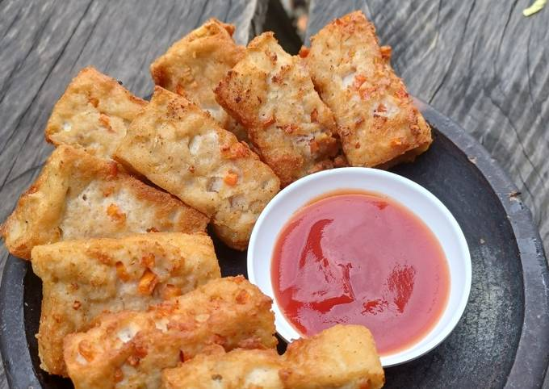

Nuget Ayam Tahu
Bahan-bahan
- 1/4 kg Dada ayam
- 2 balok sedang Tahu
- 3 siung bawang merah goreng
- 3 siung bawang putih goreng
- 1 butir Telur
- 50 gr Tepung terigu
- 1/2 sdt Royco
- 1/2 sdt Garam
- 1/4 sdt Lada
- 1/4 sdt Gula
Bahan Celupan
- 100 gr Tepung terigu
- 180 ml Air
- 1/4 sdt Royco
- 1/4 sdt Garam
- Tepung panir secukupnya
Cara Membuat
- Cincang halus dada ayam.
- Haluskan tahu, bawang merah, dan bawang putih.
-
Campur tahu halus, ayam, telur, lada, garam, Royco, gula, dan
tepung terigu.
-
Masukkan dalam loyang dan kukus selama 20 menit dengan api sedang.
- Campurkan semua bahan celupan.
-
Potong nuget sesuai selera, celupkan ke bahan celupan lalu tepung
panir. Lakukan sampai nuget habis.
- Goreng sampai matang.
Selamat mencoba!